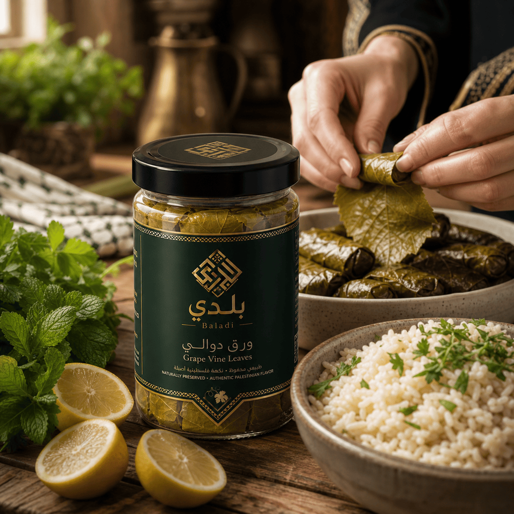
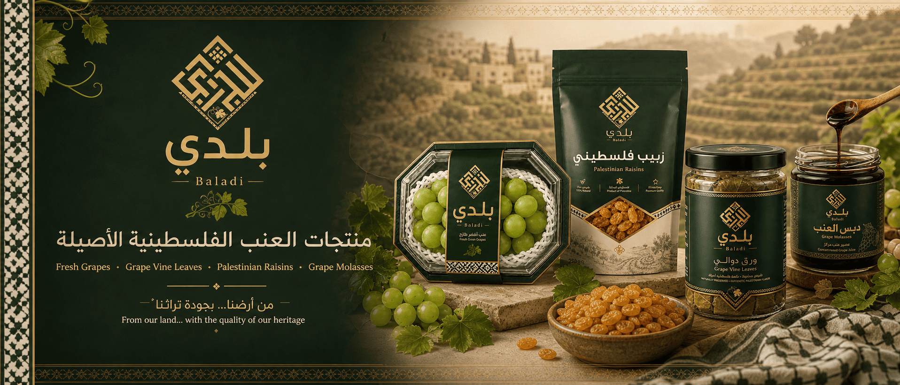
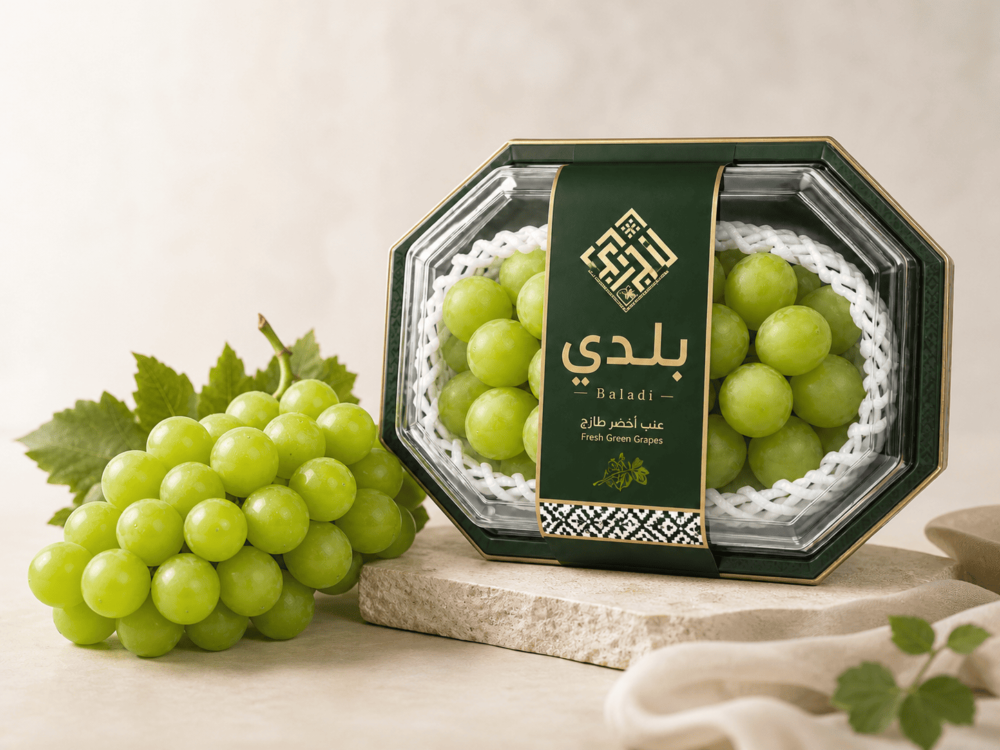
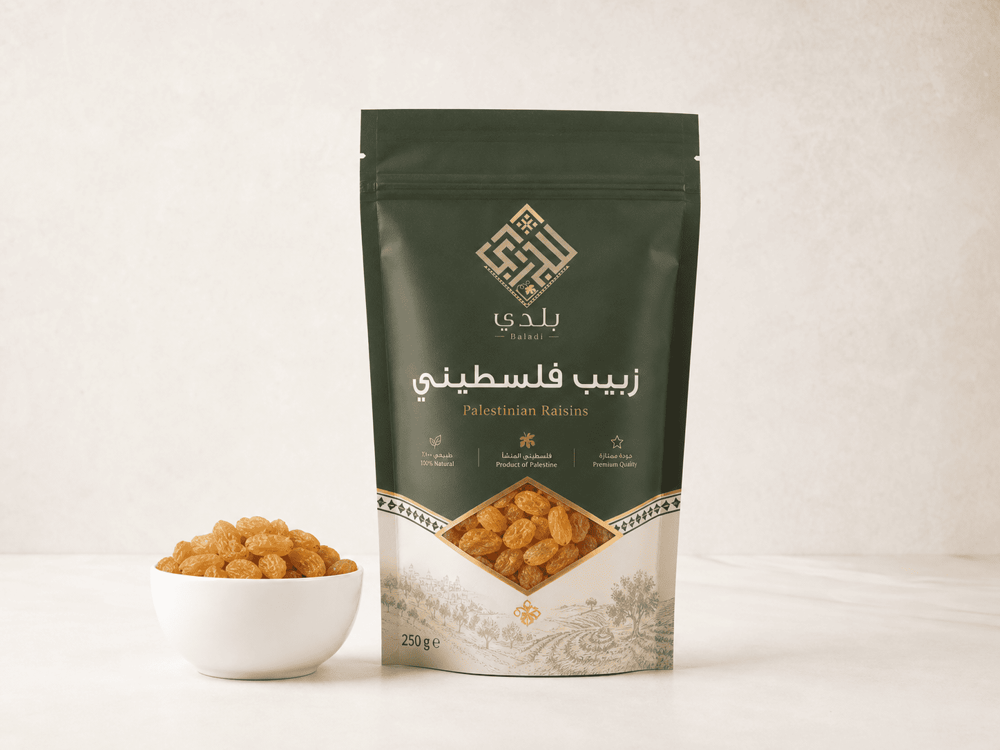
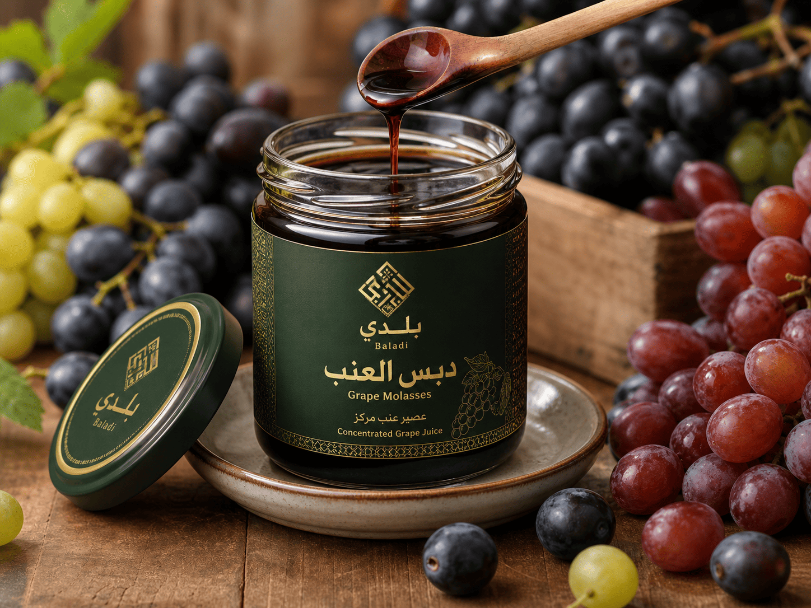

Grape Vine Leaves / ورق دوالي


Baladi Store offers grape vine leaves, fresh grapes, Palestinian raisins, and grape molasses. Our products are inspired by the grape farms and food traditions of Hebron.
Hebron is known for its grape farms and traditional grape products. Many local families use grapes to make fresh fruit, grape vine leaves, raisins, and grape molasses.



